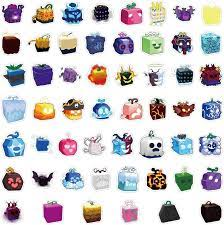

Blox Fruits is a game play by millions of people and has become very popular. In blox fruits you need to take quests for your level and defeat the required amount of enemies. You can get different fighting styles and the fighting styles are combat, dark step, electric, water kung-fu, dragons breath, super human, death step, electric claw, sharkman karate, dragon talon, god human, and sanguine art. There are different requirements for each fighting style. Some fighting styles are only available in the first sea, second sea, or third sea.
In Blox Fruits there are also different swords you can get. Some are only available in the first sea such as the katana, cutlass, dual katana, pipe, triple katana, dual headed blade, soul cane, and saber which can be upgraded to v2 and is widely considered the best sword in the first sea. In the second sea you can try to find the legendary sword dealer which sells three different swords each costing $2 million, if you get all three swords you can craft it into the triple true katana known as the TTK for $2 million. Another sword you can get in the second sea is the midnight blade which you can buy from El_Admin who is located in the cursed ship next to graveyard, you can buy the midnight blade from El_Admin for 100 ectoplasm.
There are 4 main ways to deal damage two of which I went over, they include fighting styles, swords, guns, and fruits. I will not be going over the guns because nobody uses them and it's not school appropriate. Fruits are the fourth main way to deal damage and can be bought from the blox fruits dealer, if you buy a fruit from the dealer it will not be a physical fruit and you will automatically equip it. The dealer will sell random fruits and the fruits reset every 4 hours, rocket and spin are always in stock. Another way to get blox fruits is to spin a random fruit, you can spin a fruit from Zioles. If you spin a fruit you will get a random physical fruit meaning it will appear in your inventory and you can eat it, store it, or drop it. If you eat it you will equip the fruit you were holding and lose your current fruit. If you store it it will be in your inventory and you will no longer be able to drop it. If you drop it the fruit you are holding will drop on the ground and any player including you will be able to pick it up, if you pick up a fruit off the ground it will appear in your inventory as a physical fruit. You need to be level 50 to spin a fruit and it costs a certain amount of money depending on your level, and you can only spin every 2 hours.
The first sea consists of 14 islands, there are two different starter islands one is for pirates and the other is for marines, the pirate starter has one quest that requires level 1, the marine starter also only has one quest that requires level 1. The second island is the Jungle and requires level 10, there are three quests that are at level 10, 15, and 25. There is one boss quest that requires level 25. The third island is the pirate village and requires level 30, there are three quests that require level 30, 40, 55. There is one boss quest that requires level 55. The fourth island is the desert and requires level 60, there are two quests that require level 60 and level 80. There is no boss quest. The fifth island is the frozen village and requires level 90, there are three quests that require level 90, 100, and 105. There is one boss quest that requires level 105. The sixth island is the marine fortress and requires level 120, there are two quets that require level 120 and level 130. There is one boss quest that requires level 130. The seventh island is the skylands and requires level 150, there are two quests that require level 150 and level 175. There is no boss quest. The eigth island is the prison and requires level 190, there are 5 quests that require level 190, 210, 220, 230, and 240. There is three boss quests that require level 220, 230, and 240. The ninth island is the colosseum and requires level 250, there are 2 quests that require level 250 and level 275. There is no boss quest. The tenth island is the magma village and requires level 300, there are 3 quests that require level 300, 325, and 350. There is one boss quest that requires level 350. The eleventh island is the underwater city and requires level 375, there are three quests that require level 375, 400, 425. There is one boss quest that requires level 425. The twelvth island is the upper skylands and requires level 450, there are 6 quests that require level 450, 475, 500, 525, 550, and 575. There are 2 boss quests that require level 500 and level 575. The thirteenth island is fountain city and requires level 625, there are three quests that require level 625, 650, and 675. There is one boss quest that requires level 675.
The 14th island in the first sea doesn't have any quests, it is called middle town and people call it mid for short. In middle town you can find the death king who sells different things for bones, you can find bones in cursed chests which are black chests that can be found across the first, second, and third sea. The death king sells a random item for 50 bones which can be fragments, money, 10 minutes of 2x exp, a fruit, and many other random items. He also sells a stat refund for 150 bones, a stat refund takes away your stats and puts them in your spendable stat points so you can put them in different areas. The death king also sells a race reroll for 300 bones, a race reroll gives you a different random race. The different races are human, angel, shark, cyborg, rabbit, and ghoul. Each race can be upgraded to v2,v3, and v4. There is also a blox fruits dealer located in middle town. The boss Saw spawns in middle town. The Saw is a level 100 boss that can drop the sword shark saw when killed.

Blox Fruits has many different fruits ranging from many different prices and power levels. The current fruits include rocket, spin, chop, spring, bomb, smoke, spike, flame, falcon, ice, sand, dark, diamond, light, rubber, barrier, ghost, magma, quake, buddha, love, spider, sound, phoenix, portal, rumble, pain, blizzard, gravity, mammoth, dough, shadow, venom, control, spirit, dragon, and leopard. The rocket fruit is a common natural type blox fruit that costs $5,000, it has no awakening. The spin fruit is a common natural type blox fruit that costs $7,500, it has no awakening. The chop fruit is a common natural type blox fruit that costs $30,000, it has no awakening. The spring fruit is a common natural type blox fruit that costs $60,000, it has no awakening. The bomb fruit is a common natural type blox fruit that costs $80,000, it has no awakening. The smoke fruit is a common elemental type fruit that costs $100,000, it has no awakening. The spike fruit is a common natural type blox fruit that costs $180,000, it has no awakening. The flame fruit is an uncommon elemental type blox fruit that costs $250,000, it can be awakened for 14,500 fragments. The falcon fruit is an uncommon beast type blox fruit that costs $300,000, it has no awakening. The ice fruit is an uncommon elemental type blox fruit that costs $350,000, it can be awakened for 14,500 fragments. The sand fruit is an uncommon elemental type blox fruit that costs $420,000, it can be awakened for 14,500 fragments. The dark fruit is an uncommon elemental type blox fruit that costs $500,000, it can be awakened for 14,500 fragments. The diamond fruit is an uncommon natural type blox fruit that costs $600,000, it has no awakening. The light fruit is a rare elemental type blox fruit that costs $650,000, it can be awakened for 14,500 fragments. The rubber fruit is a rare natural type blox fruit that costs $750,000, it has no awakening. The barrier fruit is a rare natural type blox fruit that costs $800,000, it has no awakening. The ghost fruit is a rare natural type blox fruit that costs $940,000, it has no awakening. The magma fruit is a rare elemental type blox fruit that costs $960,000, it can be awakened for 14,500 fragments. The quake fruit is a legendary elemental type blox fruit that costs $1,000,000, it can be awakened for 17,000 fragments. The buddha fruit is a legendary beast type blox fruit that costs $1,200,000, it can be awakened for 14,500 fragments. The love fruit is a legendary natural type blox fruit that costs $1,300,000, it has no awakening. The spider fruit is a legendary natural type blox fruit that costs $1,500,000, it can be awakened for 17,300 fragments. The sound fruit is a legendary natural type blox fruit that costs $1,700,000, it has no awakening. The phoenix fruit is a legendary beast type blox fruit that costs $1,800,000, it can be awakened for 18,500 fragments. The portal fruit is a legendary natural type blox fruit thats costs $1,900,000, it has no awakening. The rumble fruit is a legendary elemental type blox fruit that costs $2,100,000, it can be awakened for 14,500 fragments. The pain fruit is a legendary natural type blox fruit that costs $2,300,000, it has no awakening. The blizzard fruit is a legendary elemental type blox fruit that costs $2,400,000, it has no awakening. The gravity fruit is a mythical natural type blox fruit that costs $2,500,000, it has no awakening. The mammoth fruit is a mythical beast type blox fruit that costs $2,700,000, it has no awakening. The dough fruit is a mythical elemental type blox fruit that costs $2,800,000, it can be awakened for 18,500 fragments. The shadow fruit is a mythical natural type blox fruit that costs $2,900,000, it has no awakening. The venom fruit is a mythical natural type blox fruit that costs $3,000,000, it has no awakening. The control fruit is a mythical natural type blox fruit that costs $3,200,000, it has no awakening. The spirit fruit is a mythical natural type blox fruit that costs $3,400,000, it has no awakening. The dragon fruit is a mythical beast type blox fruit that costs $3,500,000, it has no awakening. The leopard fruit is a mythical beast type blox fruit that costs $5,000,000, it has no awakening.
There have also been some fruits that have been replaced such as the kilo fruit, revive fruit, door fruit, string fruit, paw fruit, and soul fruit. The kilo fruit was a common natural type blox fruit that costs $5,000, it had no awakening and was replaced by rocket. The revive fruit was an uncommon natural type blox fruit that costs $550,000, it had no awakening and was replaced by ghost. The door fruit was a rare natural type blox fruit that costs $950,000, it had no awakening and was replaced by portal. The string fruit was a legendary natural type blox fruit that costs $1,500,000, it could be awakened for 17,300 fragments and was replaced by spider. The paw fruit is a legendary natural type blox fruit that costs $2,300,000, it had no awakening and was replace by pain. The soul fruit was a mythical natural type blox fruit that costs $3,400,000, it had no awakening and was replaced by spirit.
Check out information about the second sea, third sea, NPCs, and accessories.
Second Sea Third Sea NPCs AccessoriesYou can email me here.